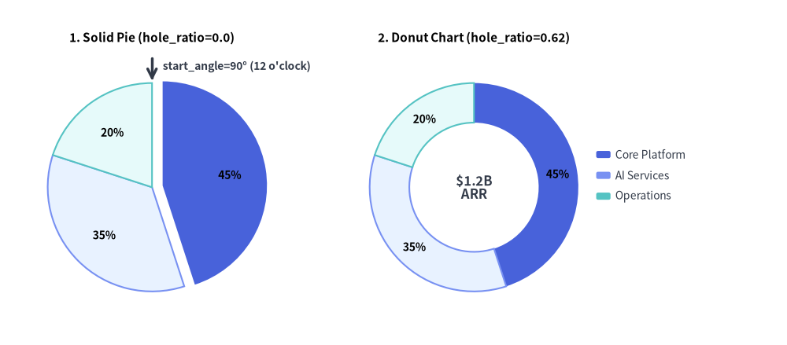
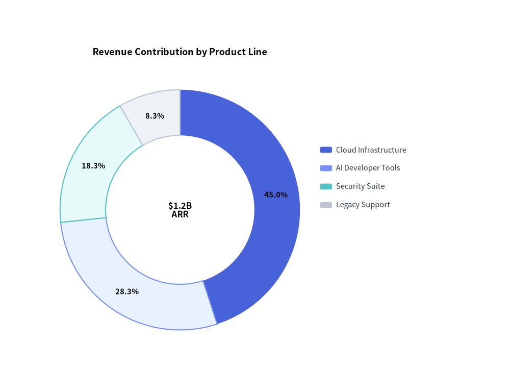
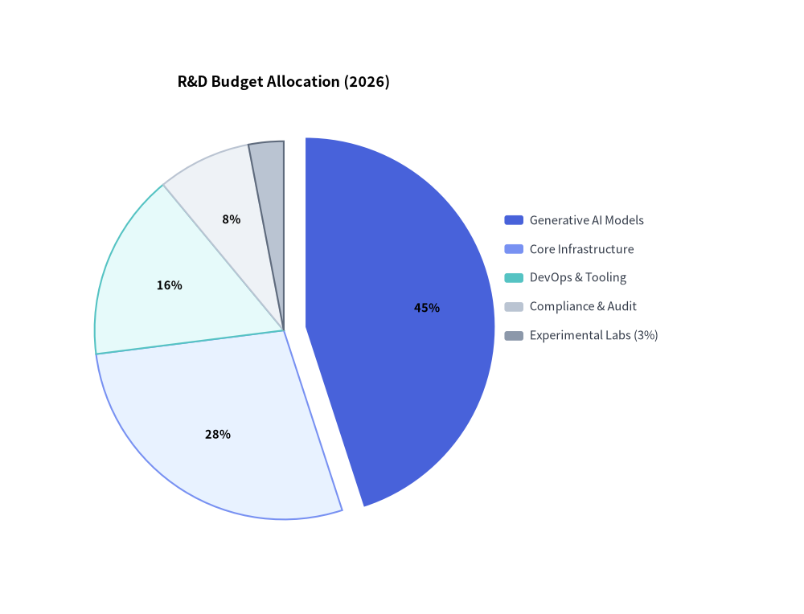

PieChart: Proportional Compositions & Donut Badges
PieChart (drawlib.charts.pie) visualizes proportional compositions where slices represent parts of a whole ($100%$). It supports classic solid pie charts, modern donut rings with center KPI badges, outward slice explosion, custom angular orientations, and decoupled legend rendering.
1. Overview & Topologies

Source Code
from drawlib.canvas import save, setup
from drawlib.charts.pie import PieChart
from drawlib.lines import line
from drawlib.styles import Styles
from drawlib.text import text
setup(width=132, height=58)
# Left: Solid Pie Chart (hole_ratio=0.0) with Exploded Slice
solid_pie = PieChart(
radius=17.5,
hole_ratio=0.0,
start_angle=90.0,
title="1. Solid Pie (hole_ratio=0.0)",
title_style=Styles.BlackBold.patch(text_size=11.0),
value_text_style=Styles.BlackBold.patch(text_size=10.0),
value_format="{:.0f}%",
)
solid_pie.add_slice("Core Platform", 45.0, style=Styles.PrimaryFlat, explode=1.8)
solid_pie.add_slice("AI Services", 35.0, style=Styles.PrimaryNeutral)
solid_pie.add_slice("Operations", 20.0, style=Styles.SecondaryNeutral)
solid_pie.draw(xy=(4.0, 5.0))
# Callout for start_angle=90° (12 o'clock)
pie_w, pie_h = solid_pie.get_size()
pie_cx = 4.0 + pie_w / 2.0
pie_top_y = 5.0 + (pie_h - 6.0) / 2.0 + 17.5
line((pie_cx, pie_top_y + 4.2), (pie_cx, pie_top_y + 0.4), arrow_head="->", style=Styles.DarkBold)
text(
(pie_cx + 1.8, pie_top_y + 2.8),
"start_angle=90° (12 o'clock)",
style=Styles.DarkBold.patch(text_size=10.0, halign="left"),
)
# Right: Donut Chart (hole_ratio=0.62) with Center KPI
donut_pie = PieChart(
radius=17.5,
hole_ratio=0.62,
center_text="$1.2B\nARR",
center_text_style=Styles.DarkBold.patch(text_size=12.0),
title="2. Donut Chart (hole_ratio=0.62)",
title_style=Styles.BlackBold.patch(text_size=11.0),
value_text_style=Styles.BlackBold.patch(text_size=10.0),
value_format="{:.0f}%",
)
donut_pie.add_slice("Core Platform", 45.0, style=Styles.PrimaryFlat)
donut_pie.add_slice("AI Services", 35.0, style=Styles.PrimaryNeutral)
donut_pie.add_slice("Operations", 20.0, style=Styles.SecondaryNeutral)
donut_pie.draw(xy=(58.0, 5.0))
donut_pie.draw_legend(xy=(100.0, 32.0), text_style=Styles.Dark.patch(text_size=10.0))
save()
- Solid Pie (
hole_ratio=0.0): Traditional full sector representation (hole_ratiois clamped to[0.0, 0.9]). - Donut Chart (
hole_ratio=0.5to0.7): Ring layout that provides central canvas real estate for multi-line key indicators (center_text+center_text_style). - Exploded Slices (
explode > 0.0): Displaces a specific wedge radially outward along its bisector angle for visual emphasis. - Automatic
< 4%Inline Label Suppression: Whenvalue_text_styleis provided, inline percentage labels are automatically suppressed for narrow wedges representing less than $4%$ of the total sum (or whendraw_ratio < 0.6) to prevent illegible text collisions. Always pair charts containing small slices withchart.draw_legend(...). - Flexible Value Formatting (
value_format): Accepts either a format string ("{:.1f}%") or a custom callableCallable[[float], str]receiving the computed percentage (0.0to100.0), such aslambda pct: f"{pct:.0f}%".
2. Donut Chart with Center KPI Badge
Donut charts are ideal for executive dashboards. Ground supporting slices in calm neutral tokens (Styles.PrimaryNeutral, Styles.SecondaryNeutral, Styles.Neutral) while reserving Styles.PrimaryFlat for the primary focal slice:
from drawlib.canvas import save, setup
from drawlib.charts.pie import PieChart
from drawlib.styles import Styles
setup(width=102, height=78)
chart = PieChart(
radius=24.0,
hole_ratio=0.62,
center_text="$1.2B\nARR",
center_text_style=Styles.BlackBold.patch(text_size=12.0),
title="Revenue Contribution by Product Line",
title_style=Styles.BlackBold.patch(text_size=13.0),
value_text_style=Styles.BlackBold.patch(text_size=10.5),
)
chart.add_slice("Cloud Infrastructure", 540.0, style=Styles.PrimaryFlat)
chart.add_slice("AI Developer Tools", 340.0, style=Styles.PrimaryNeutral)
chart.add_slice("Security Suite", 220.0, style=Styles.SecondaryNeutral)
chart.add_slice("Legacy Support", 100.0, style=Styles.Neutral)
chart.draw(xy=(8.0, 8.0))
chart.draw_legend(xy=(64.0, 48.0), text_style=Styles.Dark.patch(text_size=10.5))
save()

3. Exploded Slice Allocation & Callable Formatter
Setting explode > 0.0 radially displaces a slice away from the center origin. Here we also pass a callable value_format and include a minor $3%$ slice whose inline label is automatically suppressed by the < 4% threshold rule while remaining visible in the legend:
from drawlib.canvas import save, setup
from drawlib.charts.pie import PieChart
from drawlib.styles import Styles
setup(width=102, height=78)
chart = PieChart(
radius=24.0,
title="R&D Budget Allocation (2026)",
title_style=Styles.BlackBold.patch(text_size=13.0),
value_text_style=Styles.BlackBold.patch(text_size=10.5),
value_format=lambda pct: f"{pct:.0f}%",
)
chart.add_slice("Generative AI Models", 45.0, style=Styles.PrimaryFlat, explode=2.8)
chart.add_slice("Core Infrastructure", 28.0, style=Styles.PrimaryNeutral)
chart.add_slice("DevOps & Tooling", 16.0, style=Styles.SecondaryNeutral)
chart.add_slice("Compliance & Audit", 8.0, style=Styles.Neutral)
chart.add_slice("Experimental Labs (3%)", 3.0, style=Styles.Muted)
chart.draw(xy=(8.0, 8.0))
chart.draw_legend(xy=(64.0, 50.0), text_style=Styles.Dark.patch(text_size=10.5))
save()

4. API Reference
Constructor (PieChart)
All constructor arguments are keyword-only (*):
from drawlib.charts.pie import DrawDirection, FormatterType, PieChart, Slice
chart = PieChart(
*,
radius: float = 20.0,
hole_ratio: float = 0.0,
start_angle: float = 90.0,
clockwise: bool = True,
value_text_style: Style | None = None,
value_format: FormatterType = "{:.1f}%",
center_text: str = "",
center_text_style: Style | None = None,
background_style: Style | None = None,
title: str = "",
title_style: Style | None = None,
width: float | None = None,
height: float | None = None,
)
| Parameter | Type | Default | Description |
|---|---|---|---|
radius |
float |
20.0 |
Outer radius of the pie circle in canvas units. |
hole_ratio |
float |
0.0 |
Inner hole radius ratio (0.0 for solid pie; clamped to [0.0, 0.9] for donut rings). |
start_angle |
float |
90.0 |
Starting radial angle in degrees (90.0 is 12 o'clock, 0.0 is 3 o'clock). |
clockwise |
bool |
True |
When True, slices progress clockwise from start_angle; when False, counter-clockwise. |
value_text_style |
Style | None |
None |
Style for percentage badges drawn inside wedges ($\ge 4%$ share). If None, badges are omitted. |
value_format |
FormatterType |
"{:.1f}%" |
Format string or Callable[[float], str] receiving the slice's percentage (0.0–100.0). |
center_text |
str |
"" |
Text rendered inside the donut hole (supports \n multiline strings; requires hole_ratio > 0). |
center_text_style |
Style | None |
None |
Typography style for center_text. Required for center badge text to render. |
background_style |
Style | None |
None |
Style for the outer chart background card. If None, card is omitted. |
title |
str |
"" |
Chart title text rendered at the top of the container. |
title_style |
Style | None |
None |
Typography style for title. Required for the title to render. |
width / height |
float | None |
None |
Explicit container dimensions. If None, computed automatically from radius and title. |
Methods & Properties
add_slice(name: str, value: float, style: Style, explode: float = 0.0, legend_text_style: Style | None = None, *, show: bool = True, draw_ratio: float = 1.0, draw_direction: DrawDirection = "left_to_right") -> Slice: Registers a proportional wedge and returns the mutableSliceinstance.explode: Outward radial offset distance along the slice's mid-angle (0.0= flush with center).legend_text_style: Optional customStylefor this slice's label indraw_legend().show: Toggles slice visibility while preserving the total pie sum across all slices so remaining wedges do not rescale.draw_ratio&draw_direction: Partial spatial rendering ("left_to_right"sweeps angularly acrossspan * draw_ratio;"bottom_to_top"grows radially outward from the inner edge towardradius).
get_size() -> tuple[float, float]: Returns the computed(width, height)bounding box of the chart container.draw(xy: tuple[float, float] = (0.0, 0.0), *, radius: float | None = None, width: float | None = None, height: float | None = None, scale: float = 1.0) -> None: Renders the chart anchored at bottom-leftxy, with optional temporaryradius/width/heightoverrides and uniformscale.draw_legend(xy: tuple[float, float], text_style: Style, orientation: Literal["vertical", "horizontal"] = "vertical", swatch_size: tuple[float, float] = (2.4, 1.2), item_gap: float = 4.0, *, scale: float = 1.0) -> None: Renders the decoupled slice legend atxy.- Properties:
chart.slices -> list[Slice]: Returns a copy of registeredSliceobjects.